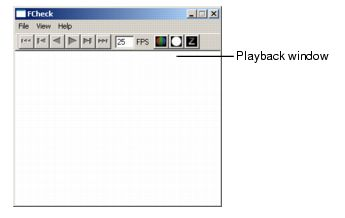
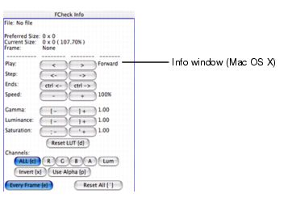

Rendering utilities
|
|
FCheck windows |
FCheck displays two windows. The FCheck Playback window appears on all platforms and displays images or sequences you open. Depending on the platform, the menu items in the Playback window are different.

For information on the menu items of Windows and Mac OS X, see Windows and Editors.
For information on viewing options and adjusting settings, see FCheck.
Along with the playback window, a FCheck command prompt window appears to display image information. Image information is displayed on Linux in the shell window used to open FCheck.
The FCheck Info window is unique to Mac OS X. Use it to control and modify the image or animation.

For information on mouse controls, see FCheck Mouse controls.